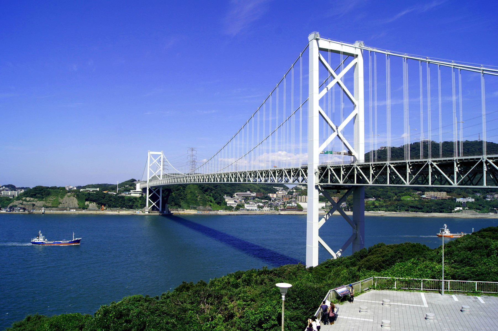
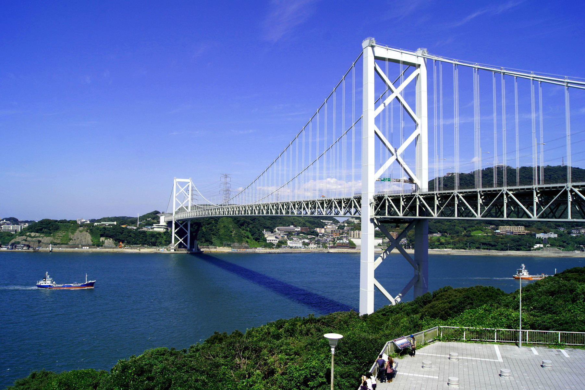

本州の西端下関市と，九州の北端北九州市門司区との間の海峡。古くは馬関海峡，下関海峡とも呼んだ。北東から南西へ走る断層の影響を受けてできた海峡。西に彦島－門司間を大瀬戸，彦島－下関間を小瀬戸と呼んだ。現在小瀬戸は埋立てられ，彦島は人工の陸繋島となった。周防灘と響灘，瀬戸内海と日本海，本州と九州を結ぶ交通の要衝である。水深約 10～30m。最狭部は下関市壇之浦と門司岬の間で，幅 670m。源平の壇ノ浦の合戦で安徳天皇入水の地として知られ，幕末にはイギリス，アメリカ，フランス，オランダの四国艦隊下関砲撃事件の舞台ともなった。付近は潮流が速い早鞆ノ瀬戸として有名。海峡は屈曲して交通の難所。国内外，大小の船舶航行が多い。 1944年鉄道関門トンネル，58年国道関門トンネルが完成し，73年には関門橋，75年に新幹線用トンネルが開通。本州と九州間の交通も便利になった。関門橋を中心として東口付近は瀬戸内海国立公園に属する。